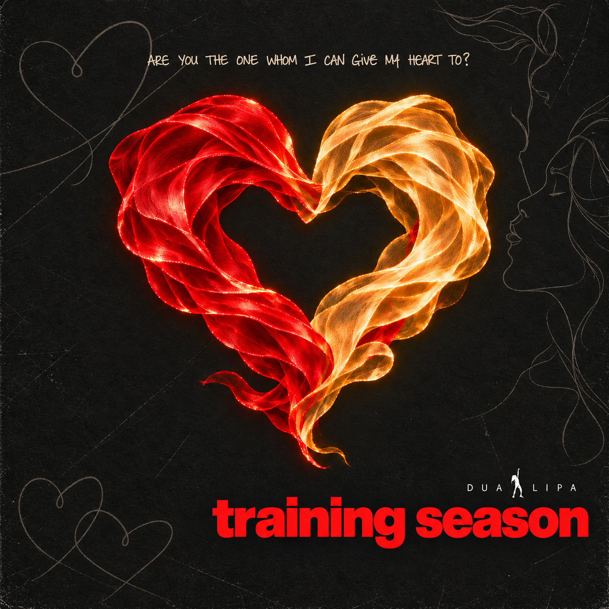

Training Season.
An album cover about self-belief, emotional clarity, and the possibility of the right connection.

Image file pending. Add training-season-redesign.png to the assets folder.
The concept
This reinterpretation of Dua Lipa’s Training Season explores the song through manifestation and a positive anticipation of love. The design reflects self-belief, emotional clarity, and the hope of finding someone who feels right.
From idea to image
The creative process explored light and dark treatments, textures, heart motifs, and variations in typography. AI-assisted image development supported the exploration, while focused revisions shaped the composition, contrast, and emotional tone. The earlier cover brought red and gold ribbons together in a glowing heart; the redesign explores the same themes through portraiture, light, and silhouettes.
The final direction
The new cover places a confident portrait between translucent red and ivory panels. Two distinct silhouettes suggest the possibility of connection, while the bold title and cinematic lighting give the design a contemporary editorial feel. The comparison below shows the evolution from the heart artwork to the new cover.
From first thought
to final feeling.
Drag the divider to compare the early design with the final cover. The reveal also plays automatically.

Music plays quietly when this comparison comes into view. Use the sound button to turn it off.
Awaiting the earlier image and the final cover file.